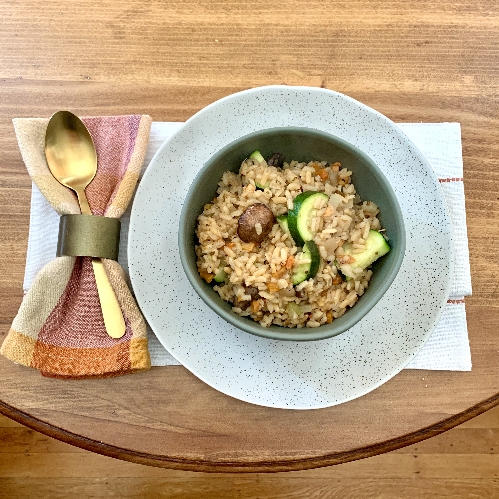

Chicken & Veggie Rice Soup
Ok... So. First of all, my rice "soup" turned quickly into a rice... casserole, perhaps? Anyway, this was a toss it all in and see what happens recipe so, for next time, I'll definitely reduce the rice or up the chicken stock! With this in mind, I've amended the recipe to include what I *think* to be the right amounts of everything based on other recipes along with what I put in. Here goes!
Now, I use TJ's frozen "Just Chicken" for last minute additions to pastas and salads so I had it in my freezer. Of course you can use a cooked chicken breast if you're heading out to the grocer, but, as this was a "have it, use it" recipe, I defrosted them in my dutch oven before adding the veg. After the chicken has literally chilled, drizzle the pot a couple of times with EVOO and add your mirepoix. Cook until the onions are soft and toss in your handful of pre-slides white mushrooms.
Once the 'shrooms are softened, add in your cup of rice, give it a stir, and pour in 5 cups of chicken stock. Mince your garlic and stir it in along with some salt, pepper, thyme, basil, and any other seasonings you love, to taste. Set the heat to high and get your soup to a boil. Once there, bring it down to simmer for 20 minutes and stir a couple of times throughout. After 20, add in your zucchini so it doesn't get too mushy and simmer for another 10 minutes.
Now, you should have a lovely soup, perfect for a cool evening. If you're like me, though, the stock may have gotten sopped up by the rice. No worries! It's just more of a rice casserole. Either way, slice yourself some homemade sourdough, top with some parsesan cheese, and enjoy!